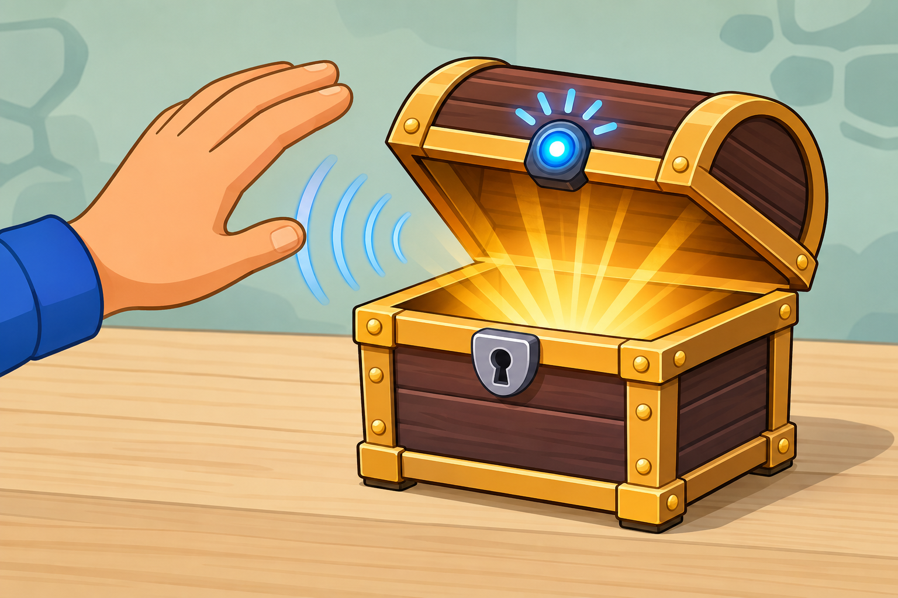

Car reversing sensor
DetectCar distance to wall
→
DecideWall is closer than 0.5 m
→
DoTurn on beeper
A distance sensor measures how far away something is without touching it.
It works a bit like a bat, sending out sounds and listening for the echo bouncing back to understand how far away things are.
Your projects can use the distance to react when something moves closer or further away.

from gpiozero import DistanceSensor
sensor = DistanceSensor(
echo=18,
trigger=17
)
distance = sensor.distancefrom picozero import DistanceSensor
sensor = DistanceSensor(
echo=3,
trigger=2
)
distance = sensor.distancedistance later in your Decide code to make your project react.